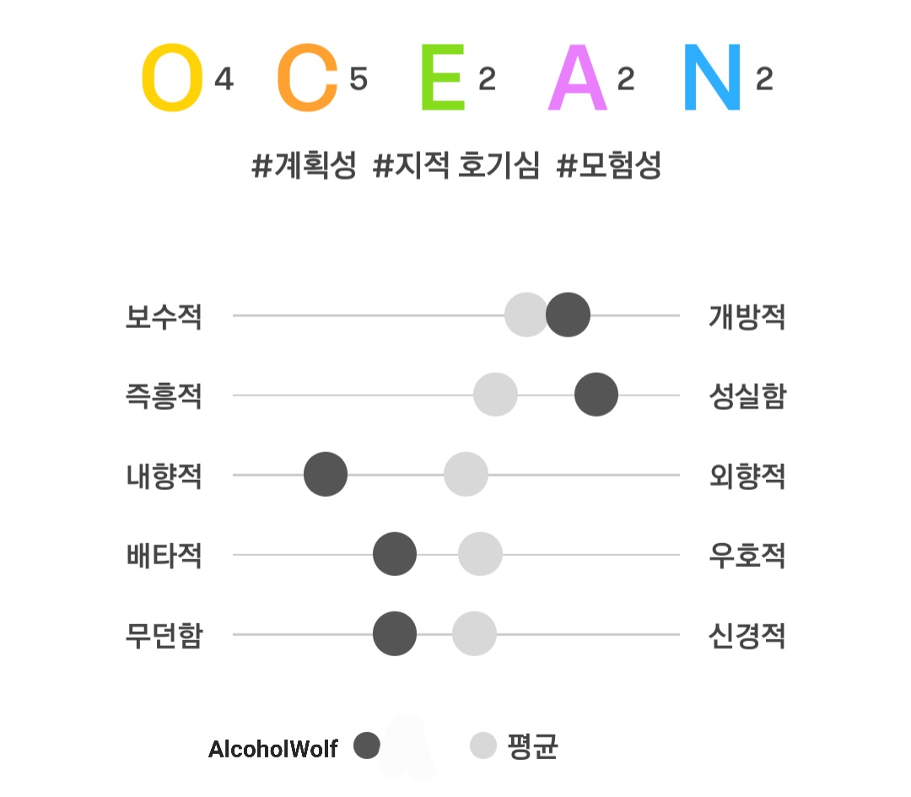

Alcoholwolf
Portfolio
Project
Hidden
# MBTI
평소에는 밝게 지내려고 노력하고,
성실하게 생활하려고 노력합니다.
하지만 실제로는
내향적이고 혼자있는걸 좋아하며 조용한걸 좋아합니다.

# 취미
항상 책을 읽어요 어렷을때부터 잇던 취미기도 하지만
뭔가 연상되고 이어지는 그런 글을
지나칠수 없어서이기도 일거에요
# 음악이란
항상 노래를 듣고 있고, 그러는걸 좋아합니다
이어지는 선율이 마음을 편안하게 해주고
한번씩 아이디어를 선물해주기에 음악을 좋아합니다
# 그림
그림은 그리게 된지 벌써 3년정도 되어가네요
처음에도 지금도 그저 제가 하고싶은대로 그리는 사도지만
그림은 자신의 성격이 묻어나오는
자신만의 그림체가 있는법이니까요
주변 지인, 의뢰를 통해서 한번씩 그림 커미션도 받앗습니다
# 방송, 스트리머 / 유튜버
방송을 하게 된건 방송 붐이 일어날떄엿어요
저는 마인크래프트랑 데바데를 햇고
그저 제가 극한의 운에 기대어 실력을 가려버리는
극악의 확률을 뚫는 플레이를 저 혼자 보기엔 아까웟거든요
요즘도 한번씩 켜서 게임도 하고, 소통도 하고, 코딩하기도 합니다.
# 코딩
코딩은 마인크래프트로 시작햇어요
마인크래프트는 자바의 변형인 MCC 언어를 쓰는데
이 언어가 오류가 많기도 하고,
마인크래프트 자체가 한계가 없다보니
제 상상력을 쉽게 투영할수 있어서 배우고 하다보니
여기까지 왓네요
# 언제까지나
앞으로도 평안안 나날이 계속되기를,
이 글을 보는 모두에게도 나날이 평안하기를
해당 사이트의 글 그림, 디자인의 저작권은 AlcoholWolf에게 있습니다
text pictures and designs on the site are copyrighted by Alcohol Wolf
무단 도용, 퍼가기는 처벌의 대상이 될 수 있습니다
Unauthorized theft or scooping may be subject to punishment